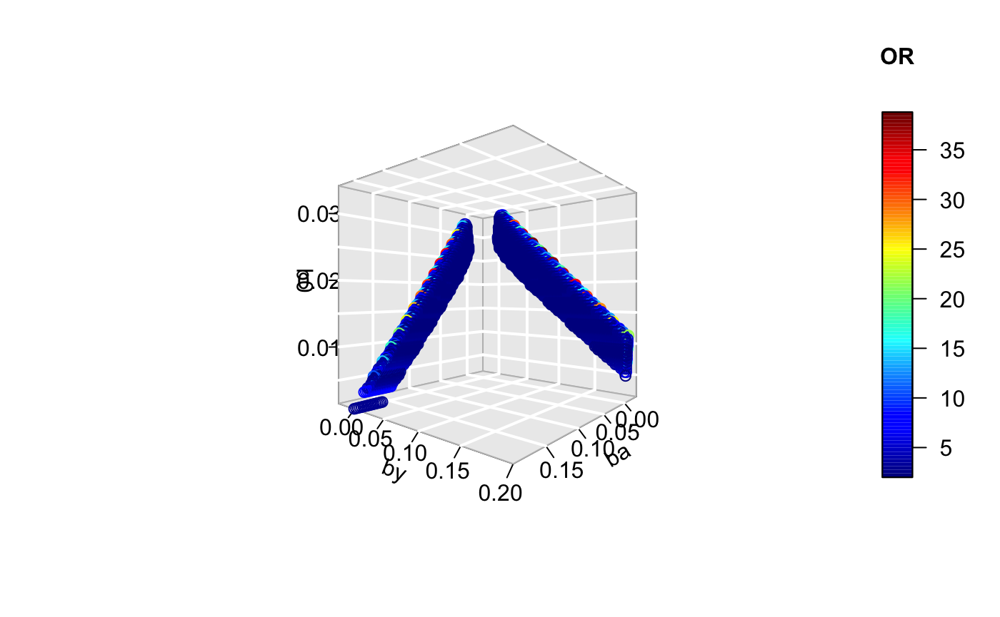

library(AscRtain)Following https://osf.io/vrcuf/, can infer the biased OR for a binary exposure (\(A\)) on a binary outcome (\(Y\)) when both of the traits influence the probability of being present in the sample (\(S\))
Assume that being present in the sample is simply:
\[ P(S = 1 | A,Y) = \beta_0 + \beta_A A + \beta_Y Y + \beta_{AY} AY \]
where \(A = {0,1}\) and \(Y = {0,1}\). The expected odds ratio under this scenario is then:
\[ E[\hat{OR}_{S=1}] = \frac{\beta_0(\beta_0 + \beta_A + \beta_Y + \beta_{AY})}{(\beta_0 + \beta_A)(\beta_0 + \beta_Y)} \]
Suppose that we know the fraction of the population that is present in our sample (\(p_{S}\)). We are only interested in the \(\beta_*\) parameter values that give rise to a value of \(p_{S}\) that is within the bounds of expectation:
\[ p_{S} = \beta_0 + \beta_A p_A + \beta_Y p_Y + \beta_{AY} p_{AY} \]
Scenario: we find an association between \(A\) and \(Y\) in our ascertained sample. Our question is what effects must \(A\) and \(Y\) have on sample ascertainment in order to induce the observed odds ratio \(OR\), assuming that the true odds ratio is 1.
Initialise a new VBB (V-structure, Binary exposure, Binary outcome) class
x <- VBB$new()
x
#> <VBB>
#> Public:
#> clone: function (deep = FALSE)
#> histogram: function (bins = 30)
#> or_calc: function (b0, ba, by, bay)
#> param: NULL
#> parameter_space: function (target_or, pS, pA, pY, pAY, b0_range, ba_range, by_range,
#> ps_calc: function (b0, ba, by, bay, pA, pY, pAY)
#> scatter: function ()
#> scatter3d: function (ticktype = "detailed", theta = 130, phi = 0, bty = "g",Example of how to calculate the odds ratio for given \(\beta_*\) parameters:
Search over a parameter space of possible values to identify whether some target odds ratio could be explained by sample ascertainment
x$parameter_space(
target_or=2,
pS=0.0275,
pA=0.15,
pY=0.1,
pAY=0,
b0_range=c(0,0.1),
ba_range=c(-0.2,0.2),
by_range=c(-0.2,0.2),
bay_range=c(0,0),
granularity=200
)
#> 8000000 parameter combinations
#> 351734 within pS_tol
#> 30893 beyond OR thresholdThe parameter values that meet the target OR due to collider bias
x$param
#> # A tibble: 30,893 x 9
#> pA pY pAY b0 ba by bay ps1 or
#> <dbl> <dbl> <dbl> <dbl> <dbl> <dbl> <dbl> <dbl> <dbl>
#> 1 0.15 0.1 0 0.0573 -0.0553 -0.2 0 0.0290 39.5
#> 2 0.15 0.1 0 0.0578 -0.0553 -0.2 0 0.0295 31.9
#> 3 0.15 0.1 0 0.0548 -0.0533 -0.2 0 0.0268 49.7
#> 4 0.15 0.1 0 0.0553 -0.0533 -0.2 0 0.0273 37.6
#> 5 0.15 0.1 0 0.0558 -0.0533 -0.2 0 0.0278 30.4
#> 6 0.15 0.1 0 0.0563 -0.0533 -0.2 0 0.0283 25.6
#> 7 0.15 0.1 0 0.0568 -0.0533 -0.2 0 0.0288 22.1
#> 8 0.15 0.1 0 0.0573 -0.0533 -0.2 0 0.0293 19.6
#> 9 0.15 0.1 0 0.0578 -0.0533 -0.2 0 0.0298 17.6
#> 10 0.15 0.1 0 0.0528 -0.0513 -0.2 0 0.0251 47.2
#> # … with 30,883 more rowsVisualise the distribution of odds ratios found across the range of parameters

Visualise the \(\beta_*\) parameter ranges that meet the target odds ratio

Or in 3D:

Can try to do this in 3D also:
plot3Drgl::plotrgl()Check the results through simulation
Here, \(A\) is ACE inhibitor use, \(Y\) is Covid-19 status, and \(S\) is presence in the first release of the COVID Symptom Tracker dataset.
Observational association of ACE-i influence on Covid-19 status gives OR \(\approx 2\). Assume 7.8% of population take ACE-i, 10% are infected with coronavirus at the time of sampling, 1.9 million of an adult population of 54 million are present in the sample (3.5%). What influences of ACE-inhibitor use and Covid-19 status would be required to induce a collider bias of \(OR=2\)?
Enter parameters:
x <- VBB$new()
x$parameter_space(
target_or=2.07,
pS=0.035,
pA=0.078,
pY=0.1,
pAY=0,
b0_range=c(0,0.1),
ba_range=c(-0.1,0.1),
by_range=c(-0.1,0.1),
bay_range=c(0,0),
granularity=200
)
#> 8000000 parameter combinations
#> 397920 within pS_tol
#> 56714 beyond OR thresholdWithin our sample the prevalence of ACEi use is 4.2%. In the general population it is 7.8%. This means we can narrow down the range of our simulations to only look at parameter values that would give that level of selection (reduced likelihood of selection when on ACEi).
Need to figure out what value of \(\beta_A\) could give rise to the difference in prevalences between population and sample/
n <- 1000000
Y <- rbinom(n, 1, 0.1)
A <- rbinom(n, 1, 0.078)
pS <- 0.03 - 0.02 * A + 0.1 * Y
S <- rbinom(n, 1, pS)
# target 4.2% in sample
# assume 7.8% in uk
dat <- dplyr::tibble(A,Y,S)
subset(dat, S==1) %>% {table(.$A)/sum(.$S)}
#>
#> 0 1
#> 0.95978657 0.04021343Likely somewhere between \(-0.1\) and \(-0.2\).
x$scatter() +
ggplot2::labs(x="Effect of ACE-i on inclusion probability (bA)", y="Effect of Covid-19 on inclusion probability (bY)", colour="Baseline inclusion\nprobability (b0)") +
ggplot2::annotate("rect", xmin=-0.01, xmax=-0.02, ymin=-Inf, ymax=Inf, alpha=0.4)
We can also ask - is our association actually more likely to be attenuated to OR=2, rather than inflated from OR=1. Let’s search the parameter space for parameter sets that give OR=0.8 and superimpose on the figure.
x1 <- VBB$new()
x1$parameter_space(
target_or=0.8,
pS=0.035,
pA=0.078,
pY=0.1,
pAY=0,
b0_range=c(0,0.1),
ba_range=c(-0.1,0.1),
by_range=c(-0.1,0.1),
bay_range=c(0,0),
granularity=200
)
#> 8000000 parameter combinations
#> 397920 within pS_tol
#> 111625 beyond OR threshold
x$scatter() +
ggplot2::labs(x="Effect of ACE-i on inclusion probability (bA)", y="Effect of Covid-19 on inclusion probability (bY)", colour="Baseline inclusion\nprobability (b0)") +
ggplot2::annotate("rect", xmin=-0.01, xmax=-0.02, ymin=-Inf, ymax=Inf, alpha=0.4) +
ggplot2::geom_point(data=x1$param, colour="red", size=0.1)
So it could go either way really, a lot of the figure is shaded in both blue and red, and we don’t know what the actual selection based on covid is. This indicates that it is really not reliable to be making claims about causality from this type of sampling.
Note that some areas of the figure have both negative and positive bias - that is because it changes with different levels of background participation (\(\beta_0\)). This parameter is particularly difficult to estimate what the likely true value is.
Simulate to check
Simulate individual level data according to the first result, where \(A\) has no influence on \(Y\). Note that using a population size of 1 million as the sample size doesn’t matter, just the proportion sampled.
a <- subset(x$param, by < 0 & ba > 0.01 & b0 > 0.02)[1,]
n <- 1000000
Y <- rbinom(n, 1, a$pY)
A <- rbinom(n, 1, a$pA)
pS <- a$b0 + a$ba * A + a$by * Y
S <- rbinom(n, 1, pS)What proportion of the population are present in the sample?
Estimate association between A and Y
summary(glm(Y[as.logical(S)] ~ A[as.logical(S)], family="binomial"))$coef[2,1] %>% exp
#> [1] 20.76675Compare to expected biased association